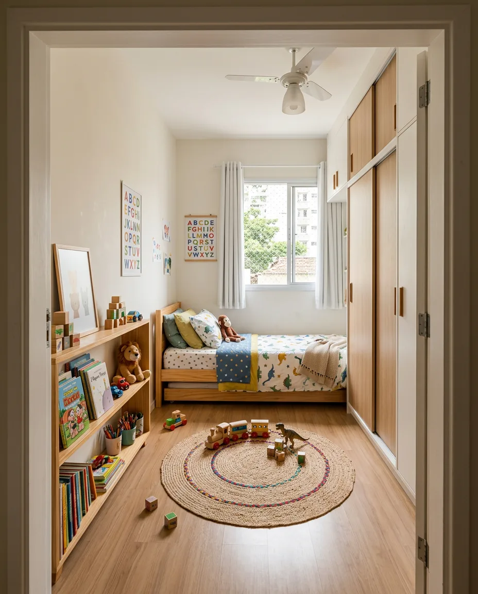
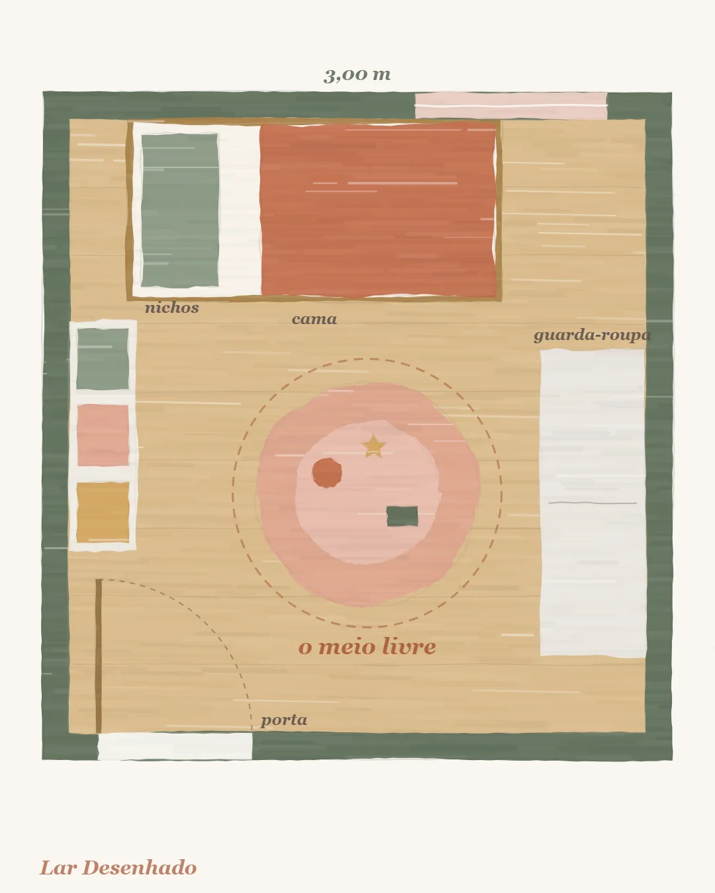

Quarto pequeno
Quarto infantil pequeno: o segredo é deixar o meio livre
Equipe Lar Desenhado · 13 de outubro de 2026

Para organizar um quarto infantil pequeno, deixe o meio livre. A criança corre, não anda, e precisa de chão para isso. Os móveis grandes vão encostados nas paredes, e a cama não avança para o centro. O resto do planejamento nasce dessa decisão.
O centro livre é inegociável
Num quarto pequeno, a tentação é encaixar mais um móvel no meio. Resista. É no centro que a brincadeira acontece, e sem ele o quarto vira só um lugar de passar. Encoste os móveis grandes nas paredes e deixe a cama junto de uma delas.
Um truque de projeto: guarda-roupa, mezanino e outros móveis grandes ficam ao fundo do quarto, e não perto da entrada. Quem abre a porta vê o espaço aberto, e a passagem não esbarra no volume mais pesado.
Pense assim: tudo o que a criança faz com o corpo, como correr, pular, rolar e montar uma cabana, precisa de chão limpo. Tudo o que fica guardado pode subir, ir para a parede ou ficar dentro de um móvel. Quando o quarto é pequeno, a pergunta deixa de ser "onde cabe mais um móvel?" e passa a ser "o que posso tirar do chão?".

As passagens que funcionam
Passagem é o espaço de caminhar entre um móvel e outro. As medidas de conforto são:
- 80 cm entre os móveis, que é o confortável;
- 60 cm na frente de um armário de porta de abrir, que é o mínimo.
Num quarto pequeno, vale muito trocar a porta de abrir do guarda-roupa por porta de correr: ela não invade o espaço de passagem.
Se a conta das passagens não fecha, o caminho costuma ser diminuir o móvel, e não a passagem. Um armário mais raso, uma cama compacta ou uma porta de correr devolvem espaço sem tirar o que a família precisa.
A janela e a cortina
Deixe uns 15 cm entre o móvel e a janela, para a cortina caber e abrir sem prender. É uma medida pequena, mas costuma ser esquecida até a cortina chegar.
Os centímetros que valem ouro
Uma cama de solteiro compacta, com colchão de 0,78 × 1,88 m, ganha 10 cm de largura em relação à de 0,88 m. Dez centímetros parecem pouco, mas, numa passagem, são a diferença entre apertado e confortável.
Quanto cabe em cada tamanho
Uns 9 m² já são um quarto apertado para tudo: cama, guarda-roupa, espaço de brincar e mesa. De 12 m² em diante, há folga.
Abaixo de 9 m², pense numa "torre de brincar" de cerca de 1,20 × 1,20 m. Ela junta num só volume o subir, o esconder e o guardar, e libera o resto do chão.
Esses tamanhos são referências de projeto, não regras escritas em pedra. Um quarto estreito e comprido se comporta diferente de um quadrado, e por isso o melhor teste é sempre desenhar o seu quarto, com as suas medidas, antes de comprar.
Irmãos no mesmo quarto
Quando o quarto é pequeno e os irmãos dividem o espaço, em vez de avançar com as camas para o meio, deixe-as lado a lado, sobre um tablado. O tablado ainda pode ter gavetas por baixo, e o centro continua livre.
Apartamento alugado
Se a casa é alugada, o planejamento muda um pouco: você pode levar os móveis consigo. Escolha móveis em módulos, que passem pela porta e pelo elevador. Um guarda-roupa de 55 a 60 cm de profundidade passa melhor que um de 1 m. E evite qualquer coisa que só entre içada pela janela.
Num quarto pequeno, o móvel mais importante é o espaço vazio no meio.
Para conferir antes de comprar
- Os móveis grandes estão encostados nas paredes, com a cama fora do meio?
- Guarda-roupa e móveis grandes ficam ao fundo, longe da entrada?
- Há 80 cm de passagem entre os móveis e, no mínimo, 60 cm em frente ao armário de abrir?
- O guarda-roupa tem porta de correr?
- Sobram uns 15 cm entre o móvel e a janela?
- Abaixo de 9 m², a torre de brincar de cerca de 1,20 × 1,20 m foi considerada?
- Em apartamento alugado, os móveis são módulos que passam pela porta e pelo elevador?
Leia também
- Cama alta e mezanino: as medidas que deixam a brincadeira segura
- O quarto que cresce: como planejar hoje pensando na próxima fase
- Como escolher as cores do quarto infantil sem errar
Fontes
- Recomendações de projeto de escritórios especializados em quarto infantil
- Guias de decoração de quarto de bebê e de detalhamento de armários (passagens de 60 e 80 cm)